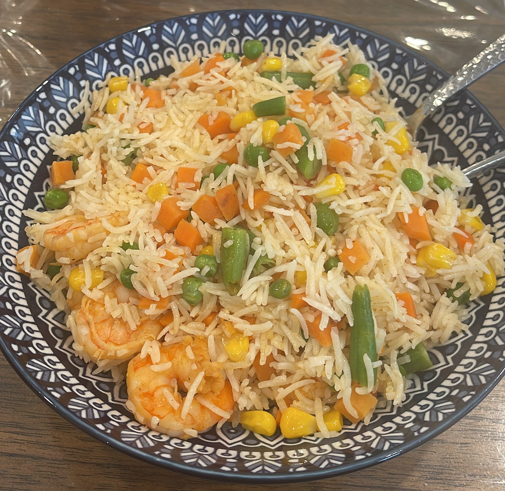

Basel's Shrimp Fried Rice

Description
This recipe is Basel's take on the popular asian dish, shrimp fried rice. It's simple, quick to make, and tastes delicious!
Ingredients:
- Cumin
- Turmeric
- Paprika
- Onion Powder
- Lemon
- Salt
- Pepper
- Garlic
- Olive Oil
- De-Tailed,De-Shelled, Pre Cooked Shrimp
- Mixed Veggies
- Basmati Rice
- Egg
Steps:
Yellow Rice:
- Wash your rice until it the water is clear and soak for 20-30 min
- Drain the water and add your soaked rice into a pot and toast on medium heat for a few minutes.(Make sure to keep stirring around the pot)
- Add cumin and turmeric into the pot and make sure all the rice gets covered by the spices.
- When the rice is covered in the spices, add enough water so that the rice is fully submerged leaving about a finger knuckles length of water between the top of the rice and the top of the water
- Add some salt and pepper and raise to a medium high heat
- When the water level gets below the rice and only a few bubbles can be seen, turn off the heat and cover the pot with a lid for 15-20 min
Ideally you would want to use day old rice for this recipe however this is not a requirement.
Shrimp Spice Blend:
- Cumin
- Paprika
- Onion powder
- Lemon
- Salt
- Pepper
Let the Shrimp marinate in these seasonings for about 20 minutes before cooking.
Combining everything
- Add your frozen mixed veggies into a big deep pan (or a wok if you have one) on medium-high heat.
- When the frost on the outer part of the veggies is gone, add some olive oil and make sure to spread it so that all of the veggies are covered.
- Cook the veggies for 12-15 minutes until soft.
- When veggies are almost done, clear some space in the pan and add garlic and some olive oil. Sautee for a few minutes.
- When the garlic is finished, mix it around with the veggies and make sure it is evenly spread.
- Add your cooked rice and egg and mix well, making sure the egg is spread evenly between the rice and veggies.
- When the egg is fully cooked, add your shrimp (You can add some of the shrimps marinade as well) and mix thoroughly with everything in the pan.
You can serve this with siracha, soy, or any sauce of your choice. Enjoy!